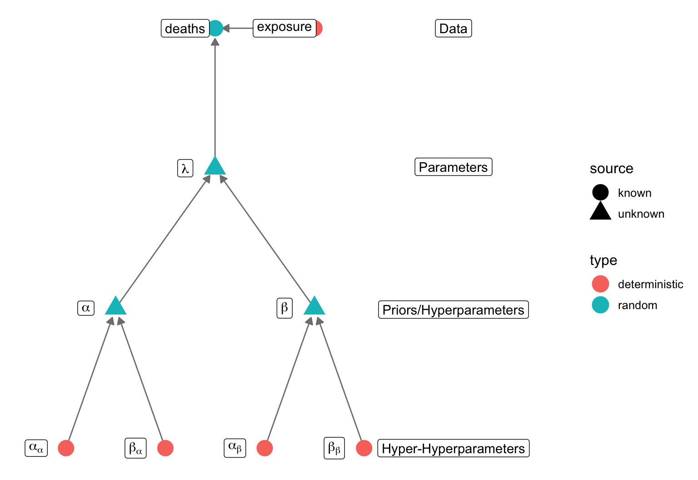

Hierarchical Models
M. Talluto
01.12.2023
Kidney cancer death rates in the US
- Kidney cancer death rates in the US, by county
- Is there a geographic pattern? If so, why?
Kidney cancer death rates in the US
- Kidney cancer death rates in the US, by county
- Is there a geographic pattern? If so, why?
Kidney cancer death rates in the US
- Kidney cancer death rates in the US, by county
- Is there a geographic pattern? If so, why?

Kidney cancer death rates in the US
- Kidney cancer death rates in the US, by county
- Is there a geographic pattern? If so, why?
- How can we estimate county-specific rates in a reasonable way?

Kidney cancer Stan model: global/constant rate
- Our data are counts, suggesting Poisson
- We don’t use binomial in part because we care about death
rate, not probability
- Here we build a model accounting for exposure
(population size)
- We assume mortality rate \(\lambda\) is constant for the entire
dataset
- \(\lambda\) is
pooled across units (county)
library(data.table)
(cancer = readRDS("../vu_advstats_students/data/us_k_cancer.rds"))
## state county kidney_cancer_deaths population death_rate_per_1000
## 1: alabama autauga 2 61921 0.03229922
## 2: alabama baldwin 7 170945 0.04094884
## 3: alabama barbour 0 33316 0.00000000
## 4: alabama bibb 0 30152 0.00000000
## 5: alabama blount 3 88342 0.03395893
## ---
## 6256: wyoming sweetwater 2 104192 0.01919533
## 6257: wyoming teton 0 26751 0.00000000
## 6258: wyoming uinta 1 52910 0.01890002
## 6259: wyoming washakie 2 22814 0.08766547
## 6260: wyoming weston 0 17802 0.00000000
Kidney cancer Stan model: global/constant rate
- Our data are counts, suggesting Poisson
- We don’t use binomial in part because we care about death
rate, not probability
- Here we build a model accounting for exposure
(population size)
- We assume mortality rate \(\lambda\) is constant for the entire
dataset
- \(\lambda\) is
pooled across units (county)
data {
int <lower = 1> n;
int <lower = 0> deaths [n];
int <lower = 0> population [n];
real <lower = 0> alpha;
real <lower = 0> beta;
}
transformed data {
// cancer is rare, lets make the numbers more reasonable
vector <lower = 0> [n] exposure;
for(i in 1:n)
exposure[i] = population[i] / 1000.0;
}
parameters {
real <lower = 0> lambda;
}
model {
deaths ~ poisson(exposure * lambda);
lambda ~ gamma(alpha, beta);
}
Kidney cancer Stan model: global/constant rate
- Our data are counts, suggesting Poisson
- We don’t use binomial in part because we care about death
rate, not probability
- Here we build a model accounting for exposure
(population size)
- We assume mortality rate \(\lambda\) is constant for the entire
dataset
- \(\lambda\) is
pooled across units (county)
- Interpretation of \(\lambda\):
cancer deaths per five years per 1000 people
Question: Is there geographic variation in cancer
rates?
library(rstan)
cancer_pooled = stan_model("stan/kidney_cancer_pooled.stan")
cancer = cancer[complete.cases(cancer)]
cancer_data_stan = list(
n = nrow(cancer),
deaths = cancer$kidney_cancer_deaths,
population = cancer$population,
alpha = 0.01, # extremely vague priors, probably too vague!
beta = 0.01
)
cancer_p_fit = sampling(cancer_pooled, data = cancer_data_stan, refresh = 0)
quantile(as.matrix(cancer_p_fit, pars = "lambda")[,1], c(0.05, 0.95))
## 5% 95%
## 0.04989320 0.05063279
Kidney cancer Stan model: rates per county
- We assume mortality rate \(\lambda\) is independent for each county
- \(\lambda\) is
unpooled across units (county)
- This model has a lot of parameters, and doesn’t fit well
- Max of 2 observations per lambda!
data {
int <lower = 1> n;
int <lower = 1> n_counties;
int <lower = 0> deaths [n];
int <lower = 0> population [n];
int <lower = 0, upper = n_counties> county_id [n];
real <lower = 0> alpha;
real <lower = 0> beta;
}
transformed data {
// cancer is rare, lets make the numbers more reasonable
vector <lower = 0> [n] exposure;
for(i in 1:n)
exposure[i] = population[i] / 1000.0;
}
parameters {
vector <lower = 0> [n_counties] lambda;
}
model {
for(i in 1:n) {
int j = county_id[i];
deaths[i] ~ poisson(exposure[i] * lambda[j]);
}
lambda ~ gamma(alpha, beta);
}
Kidney cancer Stan model: partial pooling
- We can use the overall rate for the whole country as a prior for
individual counties
- Areas with few observations will use the whole country as a slight
reality check
- \(\lambda\) is partially
pooled

data {
int <lower = 1> n;
int <lower = 1> n_counties;
int <lower = 0> deaths [n];
int <lower = 0> population [n];
int <lower = 0, upper = n_counties> county_id [n];
// hyper-hyper parameters, for the hyperprior
real <lower = 0> a_alpha;
real <lower = 0> a_beta;
real <lower = 0> b_alpha;
real <lower = 0> b_beta;
}
transformed data {
// cancer is rare, lets make the numbers more reasonable
vector <lower = 0> [n] exposure;
for(i in 1:n)
exposure[i] = population[i] / 1000.0;
}
parameters {
vector <lower = 0> [n_counties] lambda;
// prior hyperparameters for lambda are now parameters we will estimate!
real <lower = 0> alpha;
real <lower = 0> beta;
}
model {
for(i in 1:n) {
int j = county_id[i];
deaths[i] ~ poisson(exposure[i] * lambda[j]);
}
// prior for lambda
lambda ~ gamma(alpha, beta);
// hyperpriors for alpha and beta
alpha ~ gamma(a_alpha, a_beta);
beta ~ gamma(b_alpha, b_beta);
}
generated quantities {
// save the overal mean and variance in cancer rate
real lambda_mu = alpha/beta;
real lambda_var = alpha/beta^2;
}
Kidney cancer Stan model: partial pooling
- We can use the overall rate for the whole country as a prior for
individual counties
- Areas with few observations will use the whole country as a slight
reality check
- \(\lambda\) is partially
pooled
- Parameters with limited information can borrow
strength from the rest of the dataset
- We must take care when choosing the hyperprior parameters
- this cancer is rare, less than one per 1000 on average
- we choose a range for alpha and beta that is wide, but makes mostly
impossible values very unlikely
mean(cancer$death_rate_per_1000/(cancer$population/1000))
## [1] 0.00214512
sd(cancer$death_rate_per_1000/(cancer$population/1000))
## [1] 0.009377513
alpha_a = 0.01
beta_a = 1
# our hyperparameter alpha has a 99% prob of being between these two values
(a_int = qgamma(c(0.01, 0.99), alpha_a, beta_a))
## [1] 5.660738e-201 2.650526e-01
alpha_b = 0.8
beta_b = 0.4
# our hyperparameter alpha has a 99% prob of being between these two values
(b_int = (round(qgamma(c(0.01, 0.99), alpha_b, beta_b), 2)))
## [1] 0.01 10.32
## what would the mean lambda look like at these extremes?
round(matrix(c(a_int[1] / b_int[1], a_int[2]/b_int[1], a_int[1] / b_int[2], a_int[2] / b_int[2]), nrow = 2,
dimnames = list(c("min a", "max a"), c("min b", "max b"))),2)
## min b max b
## min a 0.00 0.00
## max a 26.51 0.03
cancer_data_stan$a_alpha = alpha_a
cancer_data_stan$b_alpha = alpha_b
cancer_data_stan$a_beta = beta_a
cancer_data_stan$b_beta = beta_b
Kidney cancer Stan model: partially pooled rates per county
- We can use the overall rate for the whole country as a prior for
individual counties
- Areas with few observations will use the whole country as a slight
reality check
- \(\lambda\) is partially
pooled
- Parameters with limited information can borrow
strength from the rest of the dataset
- We must take care when choosing the hyperprior parameters
- this cancer is rare, less than one per 1000 on average
- we choose a range for alpha and beta that is wide, but makes mostly
impossible values very unlikely
library(rstan)
cancer_unpooled = stan_model("stan/kidney_cancer_ppooled.stan")
cancer$county_id = as.integer(factor(cancer$county))
cancer_data_stan$county_id = cancer$county_id
cancer_data_stan$n_counties = max(cancer$county_id)
cancer_ppool_fit = sampling(cancer_ppooled, data = cancer_data_stan, refresh = 0, iter = 5000)
cancer_ppool_samps = as.matrix(cancer_ppool_fit, pars = "lambda")
quants = t(apply(cancer_ppool_samps , 2, quantile, c(0.05, 0.95)))
head(quants)
##
## parameters 5% 95%
## lambda[1] 0.04886829 0.10226476
## lambda[2] 0.05026754 0.09265617
## lambda[3] 0.04533926 0.09547808
## lambda[4] 0.03326814 0.05394974
## lambda[5] 0.03847852 0.07227180
## lambda[6] 0.03667585 0.04910167
# quantile interval for the overall mean
round(rbind(pooled = quantile(as.matrix(cancer_p_fit, pars = "lambda"), c(0.05, 0.95)),
partial_pooled = quantile(as.matrix(cancer_ppool_fit, pars = "lambda_mu"), c(0.05, 0.95))), 4)
## 5% 95%
## pooled 0.0499 0.0506
## partial_pooled 0.0508 0.0527
Kidney cancer Stan model: partially pooled maps

Kidney cancer Stan model: partially pooled maps

Precipitation-mortality relationships in Tsuga
- We return to the mortality of trees in North American forests
- The dataset contains information for multiple species and years
- there is replication within units
- For now, we focus on Tsuga canadensis
trees = fread("../vu_advstats_students/data/treedata.csv")
tsuga = trees[grep("Tsuga", species_name)]
# remove NAs
tsuga = tsuga[complete.cases(tsuga), ]
head(tsuga)
## n died year species_name annual_mean_temp tot_annual_pp prior_mu
## 1: 5 3 1989 Tsuga canadensis 3.849333 1003.0000 0.02222166
## 2: 6 0 1989 Tsuga canadensis 3.452000 1076.1333 0.02222166
## 3: 3 0 1997 Tsuga canadensis 3.620000 1099.4000 0.03245619
## 4: 4 4 1989 Tsuga canadensis 4.596000 989.4667 0.02222166
## 5: 3 0 1994 Tsuga canadensis 4.244667 1116.2000 0.02816339
## 6: 7 0 2002 Tsuga canadensis 4.730000 1137.2667 0.04108793

Precipitation-mortality relationships in Tsuga: H1
- Question: Does mortality of Tsuga
canadensis vary with precipitation?
- The species generally prefers moist conditions
- Hypothesis 1: The precipitation-mortality
relationship is the same across all years (Complete
pooling, 2 params)
Precipitation-mortality relationships in Tsuga: H2
- Question: Does mortality of Tsuga
canadensis vary with precipitation?
- The species generally prefers moist conditions
- Hypothesis 1: The precipitation-mortality
relationship is the same across all years (Complete
pooling, 2 params)
- Hypothesis 2: The average survival varies
by year, but the slope between precipitation and mortality is constant
(Unpooled intercepts, pooled slopes, 17 params)
- Sample size by year ranges from 1 to 208
Precipitation-mortality relationships in Tsuga: H3
- Question: Does mortality of Tsuga
canadensis vary with precipitation?
- The species generally prefers moist conditions
- Hypothesis 1: The precipitation-mortality
relationship is the same across all years (Complete
pooling, 2 params)
- Hypothesis 2: The average survival varies
by year, but the slope between precipitation and mortality is constant
(Unpooled intercepts, pooled slopes, 17 params)
- Sample size by year ranges from 1 to 208
- Hypothesis 3: There is a different regression line
for each year (No pooling, 32 parameters)
Pooled model code
# compile the model (below)
tsuga_pooled = stan_model("stan/tsuga_pooled.stan")
```{stan file = "../stan/tsuga_pooled.stan", output.var="tsuga_pooled", cache = TRUE}
## Fit the model
## note that I have rescaled precipitaiton
## additionally, we add the year variable as a factor
precip = scale(tsuga$tot_annual_pp)
standat = with(tsuga, list(
n = length(died),
n_trees = n,
died = died,
precip = precip[,1],
year = as.factor(year)))
fit_pooled = sampling(tsuga_pooled, chains=4, iter=3000, refresh=0, data = standat)
## Error in h(simpleError(msg, call)): error in evaluating the argument 'object' in selecting a method for function 'sampling': object 'tsuga_pooled' not found
Pooled models trade accuracy for precision
- All data for a single set of estimates
- highly precise parameter estimates
## Error in eval(expr, envir, enclos): object 'fit_pooled' not found
## Error in eval(expr, envir, enclos): object 'fit_pooled' not found
## Error in eval(expr, envir, enclos): object 'probs' not found
## Error in eval(expr, envir, enclos): object 'probs' not found
## Error in eval(expr, envir, enclos): object 'ci_pooled' not found
## Error in eval(expr, envir, enclos): object 'errs' not found
## Error in eval(expr, envir, enclos): object 'par_samples' not found
## Error in eval(expr, envir, enclos): object 'par_samples' not found
## Error in eval(expr, envir, enclos): object 'pl_intervals_pooled' not found
Pooled models trade accuracy for precision
- All data for a single set of estimates
- highly precise parameter estimates
- High prediction errors for individual groups
- Groups with small samples biased towards the mean
## Error in eval(expr, envir, enclos): object 'pl_probs_pooled' not found
Unpooled model: code
# compile the model (below)
tsuga_unpooled = stan_model("stan/tsuga_unpooled.stan")
// file: stan/tsuga_unpooled.stan
data {
// same as in the pooled model
int <lower=0> n;
int <lower=1> n_trees [n];
int <lower=0> died [n];
vector [n] precip;
// grouping variables
// year_id is an integer starting at 1 (the earliest year)
// ending at n_groups (the latest year)
// we use this value as an index for any group-level effects
int <lower=1> n_groups;
int <lower=1, upper = n_groups> year_id [n];
}
parameters {
// one intercept per group
vector [n_groups] a;
real b;
}
transformed parameters {
vector <lower=0, upper=1> [n] p;
// a is different for each data point, depending on the group
// so we need a loop to compute this
for(i in 1:n) {
int gid = year_id[i];
p[i] = inv_logit(a[gid] + b * precip[i]);
}
}
model {
died ~ binomial(n_trees, p);
a ~ normal(0, 10);
b ~ normal(0, 5);
}
generated quantities {
// we use generated quantities to keep track of log likelihood and
// deviance, useful for model selection
// and also to perform poserior predictive simulations
real deviance = 0;
vector [n] loglik;
int ppd_died [n];
for (i in 1:n) {
loglik[i] = binomial_lpmf(died[i] | n_trees[i], p[i]);
deviance += loglik[i];
ppd_died[i] = binomial_rng(20, p[i]);
}
deviance = -2 * deviance;
}
# factor variables must be converted to integers for stan
standat$year_id = as.integer(standat$year)
# we also need to tell stan how many groups (i.e., years) there are
standat$n_groups = max(standat$year_id)
## year year_int
## [1,] 1989 1
## [2,] 1994 2
## [3,] 1997 3
## [4,] 1998 4
## [5,] 2001 5
## [6,] 2002 6
fit_unpooled = sampling(tsuga_unpooled, chains=4, iter=3000, refresh=0,
data = standat)
## Warning in gzfile(file, "rb"): cannot open compressed file
## 'misc/7_tsuga_unpooled.rds', probable reason 'No such file or directory'
## Error in gzfile(file, "rb"): cannot open the connection
Unpooled models use less data per parameter
## Error in eval(expr, envir, enclos): object 'fit_unpooled' not found
## Error in eval(expr, envir, enclos): object 'fit_unpooled' not found
## Error in eval(expr, envir, enclos): object 'probs' not found
## Error in eval(expr, envir, enclos): object 'probs' not found
## Error in eval(expr, envir, enclos): object 'ci_unpooled' not found
## Error in eval(expr, envir, enclos): object 'errs' not found
## Error in eval(expr, envir, enclos): object 'par_samples' not found
## Error in eval(expr, envir, enclos): object 'par_samples' not found
## Error in eval(expr, envir, enclos): object 'pl_intervals_unpooled' not found
Unpooled models use less data per parameter
- Very imprecise, especially for groups with few samples
- Prediction to new groups (years) impossible
## Error in eval(expr, envir, enclos): object 'pl_probs_unpooled' not found
Compromise: partial pooling
- We don’t really expect each year to be independent
- it’s all one species, response to temperature should be similar
- some years are better or worse than others
- Imagine instead there is a population of possible years, each with
its own mortality
- This population has a true mean and a true variance
- The samples we’ve taken will come from that distribution
- This can tell us something about all possible years, not just these
years
Partial Pooling: Code
# compile the model (below)
tsuga_ppool = stan_model("stan/tsuga_ppool.stan")
```{stan file = "../stan/tsuga_ppool.stan", output.var="tsuga_ppool", cache = TRUE}
fit_ppool = sampling(tsuga_ppool, chains=4, iter=3000, refresh=0,
data = standat)
## Error in h(simpleError(msg, call)): error in evaluating the argument 'object' in selecting a method for function 'sampling': object 'tsuga_ppool' not found
Partial pooling is a compromise
- for a given group, we combine the information for this group with
information from all groups
- balances precision and accuracy
- can be best approach for new groups
- weak/undersampled groups can “borrow strength” from others
## Error in eval(expr, envir, enclos): object 'fit_ppool' not found
## Error in eval(expr, envir, enclos): object 'fit_ppool' not found
## Error in eval(expr, envir, enclos): object 'probs' not found
## Error in eval(expr, envir, enclos): object 'probs' not found
## Error in eval(expr, envir, enclos): object 'ci_ppool' not found
## Error in eval(expr, envir, enclos): object 'errs' not found
## Error in eval(expr, envir, enclos): object 'par_samples' not found
## Error in eval(expr, envir, enclos): object 'par_samples' not found
## Error in eval(expr, envir, enclos): object 'pl_intervals_ppool' not found
Partial pooling is a compromise
## Error in eval(expr, envir, enclos): object 'pl_probs_ppool' not found
Pooling comparison
## Error in eval(expr, envir, enclos): object 'pl_err_pooled' not found
Pooling comparison
## Error in eval(expr, envir, enclos): object 'pl_intervals_pooled' not found
When do we need hierarchical models?
- Repeated sampling within units (e.g., samples nested within
plots/individuals)
- Inference at multiple levels of organisation
- Covariates at multiple spatial scales
- Uneven sampling among units
- Accounting for nonindependence of samples
- Avoiding pre-averaging
- Don’t: perform repeat samples on a unit, perform analysis on the
average
- Do: Build an HM accounting for variability within and among
units
- A common category of HM is often called mixed modeling
- All mixed models are hierarchical, not all hierarchical models are
mixed models
Designing hierarchical models in Stan
- You must specify data/objects at all levels
- Often we use an indexing variable to link observations to their
group
- This variable must start at 1 and end at
n_groups
data {
// group-level objects
int <lower=1> n_groups;
int <lower=1, upper=n_groups> group_id [n];
}
parameters {
vector [n_groups] a;
// hyperparameters
real a_mu;
real a_sig;
}
transformed parameters {
pr[i] = inv_logit(a[group_id[i]]);
}
model {
a ~ normal(a_mu, a_sig); // hierarchical prior for a
}
Designing hierarchical models in Stan
- You must specify data/objects at all levels
- Often we use an indexing variable to link observations to their
group
- This variable must start at 1 and end at
n_groups
- Multiple non-nested groups are possible

data {
int n; // number of data points
int died [n]
int N[n];
vector [n] precip;
// group-level objects
int <lower=1> n_group1;
int <lower=1, upper=n_group1> group1_id [n];
int <lower=1> n_group2;
int <lower=1, upper=n_group2> group2_id [n];
}
parameters {
vector [n_group1] a1;
vector [n_group2] a2;
// hyperparameters
real a1_mu;
real <lower=0> a1_sig;
real a2_mu;
real <lower=0> a2_sig;
}
transformed parameters {
vector [n] pr;
for(i in 1:n)
pr[i] = inv_logit(a1[group1_id[i]] + a2[group2_id[i]] + b*precip[i]);
}
model {
died ~ binomial(N, pr); // likelihood
a1 ~ normal(a1_mu, a1_sig); // hierarchical prior for a1
a2 ~ normal(a2_mu, a2_sig); // hierarchical prior for a2
// hyperpriors
a1_mu ~ normal(0,10)
a2_mu ~ normal(0,10)
a1_sig ~ gamma(0.1, 0.1);
a2_sig ~ gamma(0.1, 0.1);
}
Designing hierarchical models in Stan
- Nested groups add an additional hierarchical layer

data {
int n; // number of data points
int died [n]
int N[n];
vector [n] temperature;
// group-level objects
int <lower=1> n_group1;
int <lower=1, upper=n_group1> group1_id [n];
int <lower=1> n_group2;
int <lower=1, upper=n_group2> group2_id [n_group1];
}
parameters {
vector [n_group1] a1;
vector [n_group2] a2;
// hyperparameters
real <lower=0> a1_sig;
real a2_mu;
real <lower=0> a2_sig;
}
transformed parameters {
vector [n] pr;
for(i in 1:n)
pr[i] = inv_logit(a1[group1_id[i]] + b*precip[i]);
}
model {
died ~ binomial(N, pr); // likelihood
for(i in n_group1)
a1 ~ normal(a2[i], a1_sig); // hierarchical prior for a1
// hyperpriors
a2 ~ normal(a2_mu, a2_sig); // hierarchical prior for a2
a1_sig ~ gamma(0.1, 0.1);
// hyperhyperprior
a2_mu ~ normal(0,10)
}
Posterior predictive distributions
- Do we want to predict new observations from a known group?
- e.g: What is the PPD for trees in 1989?
- Use generated quantities block in Stan
- Or new observations from an unknown group?
- Simulate new values for each param, drawn from hyper params
- Then simulate the individual observations
sim1 = function(amu, asig, bmu, bsig, N, precip) {
a = rnorm(length(precip), amu, asig)
b = rnorm(length(precip), bmu, bsig)
p = plogis(a + b*precip)
rbinom(length(precip), N, p)
}
Posterior predictive distributions
newx = seq(min(standat$precip), max(standat$precip), length.out=400)
pars = data.frame(as.matrix(fit_ppool, pars=c("a_mu", "a_sig", "b_mu", "b_sig")))
## Error in eval(expr, envir, enclos): object 'fit_ppool' not found
# For our hypothetical, we need to decide how many trees we would see
# more trees means less sampling uncertainty
N = 20
sims = mapply(sim1, amu = pars$a_mu, asig = pars$a_sig,
bmu = pars$b_mu, bsig = pars$b_sig,
MoreArgs = list(N = 20, precip = newx))
## Error in eval(expr, envir, enclos): object 'pars' not found
sim_quantiles = apply(sims, 1, quantile, c(0.5, 0.05, 0.95))
## Error in eval(expr, envir, enclos): object 'sims' not found
## Error in eval(expr, envir, enclos): object 'sim_quantiles' not found
## Error: object 'sim_qs' not found
## Error: object 'sim_qs' not found
## Error in eval(expr, envir, enclos): object 'sim_qs' not found